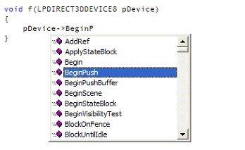
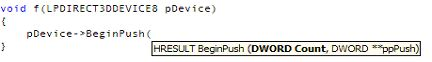

Editor Changes and Improvements
Some of the most noticeable changes between Visual Studio 6.0 and
Visual Studio .NET are in the editor itself. While these changes have no effect
on how your game title is compiled and linked (the XDK uses the same optimizing
compiler under Visual Studio .NET that it used with Visual C++ 6.0), they may
have a significant impact on how you work.
Xbox-Specific Editor Improvements
The Xbox headers are incorporated into the Microsoft Visual Studio .NET
editor IntelliSense® system. This incorporation allows the editor to offer
method completion, as in the following example:

In addition, the editor also provides argument documentation, as in the
following example:

In addition to IntelliSense support, the XDK also supports Visual Studio .NET
Dynamic Help. As you write the code for your game, Dynamic Help displays topics
relevant to the current context of your code, including Xbox-specific functions
and structures. The XDK documentation is also integrated into the Visual Studio
.NET Help system, allowing you to view the XDK table of contents and search the
XDK documentation from the comfort of the Visual Studio .NET IDE.
General Editor Changes and Improvements
The Visual Studio .NET editor is a significant improvement over the Visual
Studio 6.0 Editor. Changes and improvements include:
- A tabbed window user interface makes it easier to navigate to source
files when you have many windows open at once.
- When you type a close-parenthesis, the corresponding open-parenthesis is
highlighted. This makes it easier to edit complicated nested expressions.
This feature also works for quotation marks, brackets, and curly
braces.
- File Open now opens the file picker window relative to the current active
source window.
- An outlining mode allows you to collapse sections of code, allowing you
to focus on only those parts of the code that are really important to
you.
- A Replace in Files menu item is available for global search and replace
tasks.
- For easier source code editing in small windows, the word-wrapping option
wraps long lines of source text in the editor (but not in the source
file).
- Incremental search.
- The Dynamic Help window tracks what you're typing and provides links to
appropriate documentation.
- Visual Studio .NET has dropped support for the editor control codes used
by some older IDEs. If your favorite editor control codes are no longer
supported, you may have to learn a new set of control codes. If you are
attached to the Visual C++ 6.0 keyboard shortcuts, you can retrieve many
of them by choosing Visual C++ 6.0 from the Tools.Options.Environment.Keyboard.Keyboard mapping scheme setting.
There are several features that show up by default in the IDE that Xbox
developers will never need to use. These features include:
- The Server Explorer is useful for programming Web services in
Microsoft® Visual Basic®, but it has nothing to do with
creating an Xbox game title.
- The Toolbox would be useful if you were building Microsoft® Visual
C#TM or Visual Basic WinForm applications. As an Xbox developer, you
will not be building Winform applications, so you can save screen real
estate by closing the Toolbox.
Xbox developers should be aware of the following bugs and issues associated
with the Visual Studio .NET editor:
- If you have numerous files open, the overhead tabs on the text editor
will sometimes go blank. This is due to a bug in the NVIDIA display
drivers that shipped with Microsoft® Windows® XP. If the
overhead tabs go blank, go to Windows Update
and download new video drivers.
- The behavior of the Look In dialog box (located in Find in Files) is somewhat
counterintuitive. The dialog box requires that you not drill down to the
folder in which you want to look. Instead, you should stop one directory
(folder) level above the folder you want to open, single-click the
directory in the list that you want, and then click Add. If you are not
used to doing this, this process will trip you up again and again. This
is because it appears that highlighting the folder you want will work
(and visual feedback from the dialog seems to support this notion).
However, highlighting the folder you want to open, and then clicking OK,
has the same outcome as clicking Cancel. The Visual C++ 6.0 dialog box (which
had a control similar to the one in the Tools.Options.Project.VC++
directories dialog box) was much more intuitive.
- Using keystrokes to cycle through errors in the output window with the
Visual Studio .NET editor is different than the process used with the
Visual C++ 6.0 editor. While you can still use F8 and Shift+F8 to cycle
through error messages, the last window brought to the front of the
tabbed window stack processes the keystroke. As a result, in order for
the F8 key to cause the IDE to go to the next error in the Output window,
this window must be located at the top of its stack. There is no
keystroke associated with cycling through only the Output window
messages.